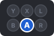
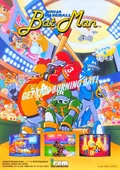
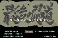
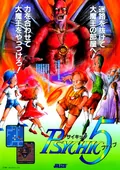
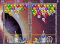

Marca cada prueba al hacerla. Se guarda en este móvil. Al acabar, pulsa Enviar resultados y pégamelos.
0 de 12 hechas
Juegos (12)
1
JoJo's Bizarre Adventure: Heritage for the Future
botones cambiados el 2026-11-19 (petición del usuario: ataques fuerte y medio en B y A, Stand en R). Que B sea el ataque fuerte (el más lento y potente), A el medio, R saque o retire el Stand, Y el flojo y X la esquiva rodando.
Dudas para mirar jugando (1)
⚠️ El final depende del personaje: se ve uno, el de Jotaro, en el vídeo de «Vídeos».
Botones
Saltar
Atacar fuerte ⚠️

Atacar medio ⚠️
Invocar o retirar el Stand ⚠️
Atacar flojo
Esquivar rodando (los tres ataques a la vez) ⚠️
Empezar
Meter una moneda
+
Salir del juego
2
Knights of Valour
si se pueden coger y usar objetos (¿con X?) y si Y hace algo.
Dudas para mirar jugando (2)
y B y enseguida A (ataque especial); ⚠️ X e Y, por confirmar (ver la tabla de controles).
⚠️ Sin datos en las fuentes consultadas.
Botones
Atacar
y enseguida
Dar un ataque especial
Saltar · cerca de un caballo: subirse · montado: bajarse
Elegir y usar objeto ⚠️
Empezar
Meter una moneda
+
Salir del juego
3
NBA Jam
🔁 Pasado de MAME 2003 a FinalBurn Neo el 2026-11-17: comprobar que arranca, la velocidad, el sonido y los botones de la tabla; el botón 3 del juego pasa a R.
🔁 Pasado de MAME 2003 a FinalBurn Neo el 2026-11-17: comprobar que arranca, la velocidad, el sonido y los botones de la tabla; el botón 3 del juego pasa a R.
Dudas para mirar jugando (1)
¿A dos se juega a la vez o por turnos? (para la línea «A dos» de la ficha)
Botones
Saltar · tirar · robar el balón
Pasar
Turbo ⚠️
Empezar
Meter una moneda
+
Salir del juego
5

Ninja Baseball Bat Man
Que arranque y que los botones hagan lo de la tabla.
Botones
Atacar · agarrar y lanzar enemigos
Saltar
+
Ataque especial (gasta algo de vida) ⚠️
Empezar
Meter una moneda
+
Salir del juego
6

Ninja Spirit
🔄 Desde RetroPie 4.8 se juega con FB Alpha 2012, porque FinalBurn Neo no lo arranca con esta copia (por SSH arrancó sin echar nada en falta): comprobar que arranca, la velocidad, el sonido y los botones de la tabla. A dos jugadores, que el J2 juegue su turno con sus propios mandos y que la pantalla no se dé la vuelta.
Que arranque y que los botones hagan lo de la tabla.
Dudas para mirar jugando (3)
En Japón se llama Ninja-kun: Ashura no Shō; en Norteamérica salió como Rad Action y JT-104. ⚠️ Las fuentes que he encontrado no cuentan la historia.
Final (cuenta el desenlace): ⚠️ no lo describen las fuentes; se ve al final del vídeo.
¿A dos se juega a la vez o por turnos? (para la línea «A dos» de la ficha)
Botones
Atacar o lanzar el arma ⚠️
Saltar ⚠️
Empezar
Meter una moneda
+
Salir del juego
8

Psychic 5
Qué botón salta y cuál golpea. Según StrategyWiki, el botón 1 (B) salta y el 2 (A) golpea, al revés que en la tabla.
Dudas para mirar jugando (2)
⚠️ Según StrategyWiki, el primer botón salta y el segundo golpea: al revés que la tabla de controles de la ficha.
¿A dos se juega a la vez o por turnos? (para la línea «A dos» de la ficha)
Botones
Planear (mantener arriba en el aire)
Atacar ⚠️
Saltar ⚠️
Empezar
Meter una moneda
+
Salir del juego
9

Puzzle Bobble 2
que arranque (necesita su zip completo, puesto el 2026-11-05), que el joystick apunte, qué botón lanza la burbuja (seguramente B) y si A hace algo (⚠️ sin guía de los botones). Los dos jugadores a la vez.
Dudas para mirar jugando (1)
La de la bartop es la versión 2.3O (fuera de Japón; ⚠️ sin comprobar si es la que cambia los personajes).
que arranque (ya tiene el zip de Puzzle Bobble 2, puesto el 2026-11-05), que el joystick apunte y qué botón lanza la burbuja (seguramente B). Al empezar, si deja elegir entre las fases normales y las nuevas. Los dos jugadores a la vez.